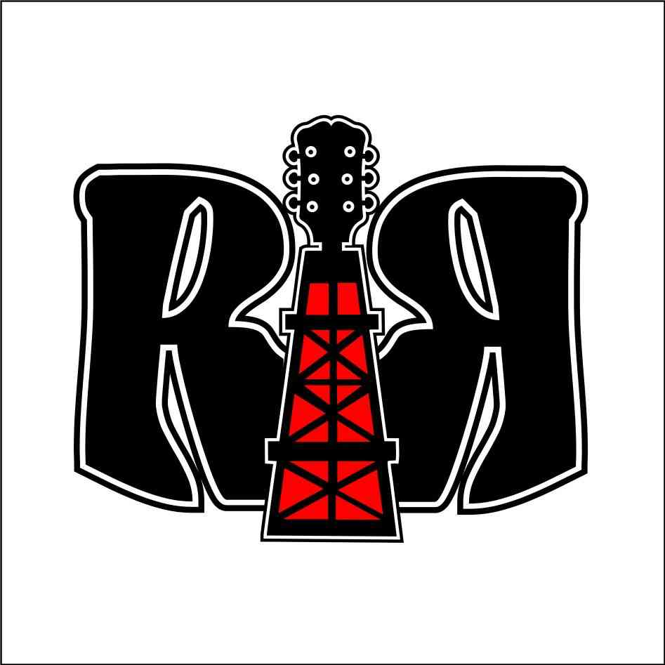

On Sunday, June 6 from 9 p.m. to 11 p.m. you'll be able to hear some of our songs from the album "Backlash" in Agata Pawłowicz's broadcast on Mordor Radio.
Let's rock!
If on June 10, 2022 you plan to come to the concert at CUMA Club in Chełmża from Toruń or Bydgoszcz, you can get one beer COMPLETELY FOR FREE!
However, there are certain conditions for receiving the prize:
- the first beer for free can only be obtained by an adult who came to the concert at the CUMA Club in Chełmża from Toruń or Bydgoszcz
- free beer is chosen by the CUMA Club
- verification takes place at the gate; You must show us:
* public transport ticket for Bydgoszcz-Chełmża or Toruń-Chełmża;
* documented route from the Janosik, Google Maps or similar application;
and then you receive a wristband from us
- you can exchange the wristband for one free beer at the bar.
We did an interview for RiffineriaRocka.pl. Let's check it out here!
Another review of "Backlash" album is available on the Kvlt.pl. Let's check it out here!
Another review of "Backlash" album is available on the RockKompas.pl. Check it out here!
Another review of "Backlash" album is available on the MetalNoise.net. Check it out here!
Another review of "Backlash" album is available on the MusicpediaOfMetal.blogspot.com. Check it out here!